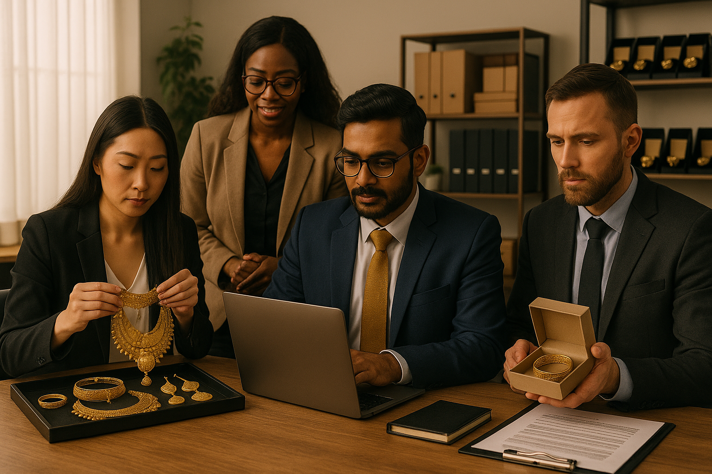

Who We Are
Friends Associates LLC was founded with the mission to bridge artisanal excellence with the dynamic pulse of global trade. With a legacy built over five decades, our foundation rests on trust, precision, and timeless beauty.
From the glittering markets of traditional craftsmanship to modern international showcases, we have journeyed with a passion for delivering jewellery that tells a story—crafted by hands, guided by heart, and curated for connoisseurs of elegance.
We collaborate with master artisans, ensuring that every piece reflects a rich blend of culture, heritage, and style. Our commitment to ethical sourcing, customer satisfaction, and fine design is unwavering.
“At Friends Associates, we don’t just trade jewellery — we share legacies, preserve traditions, and build relationships across generations and borders.”
